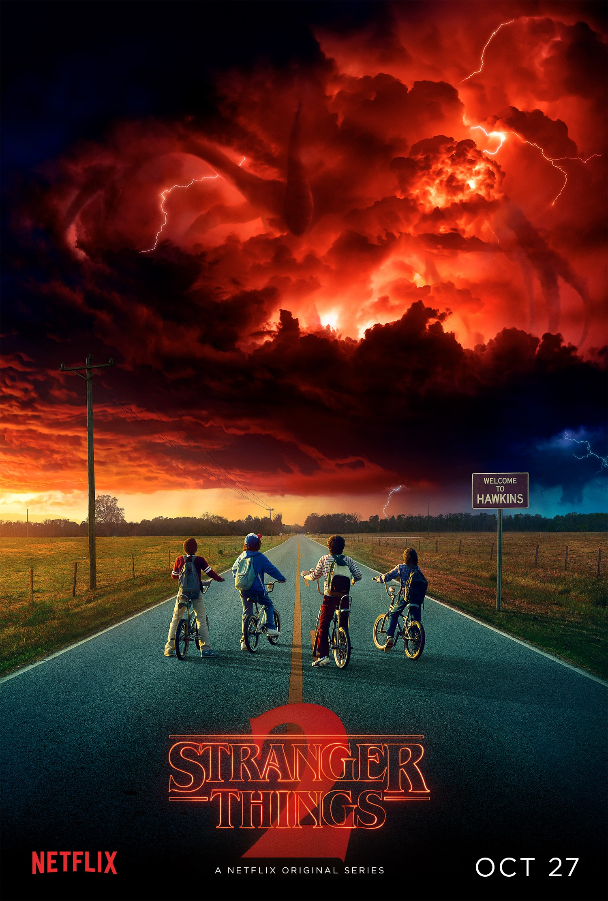
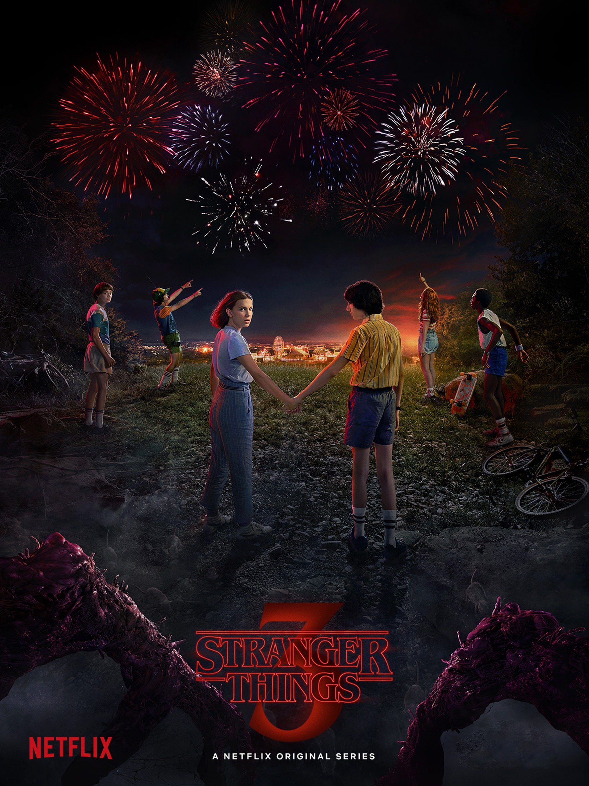
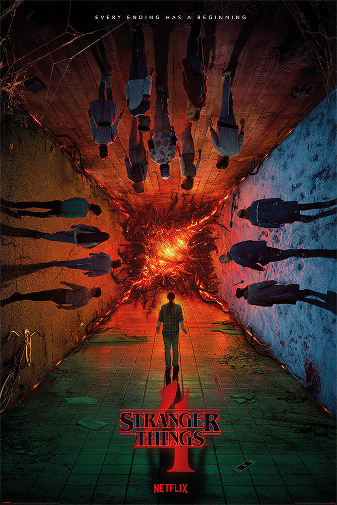
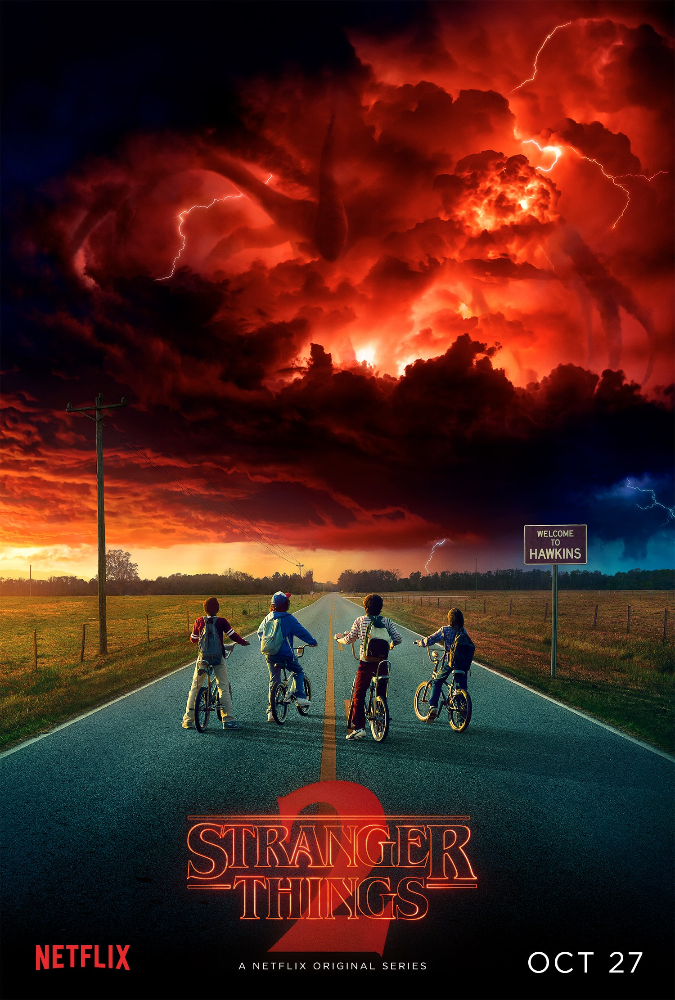
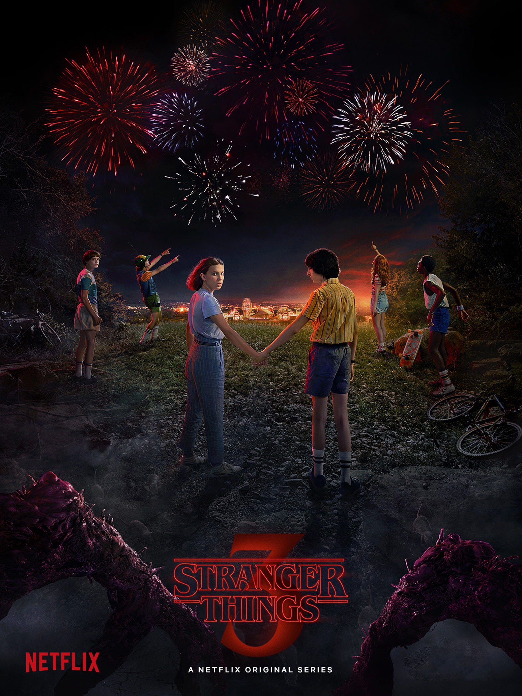
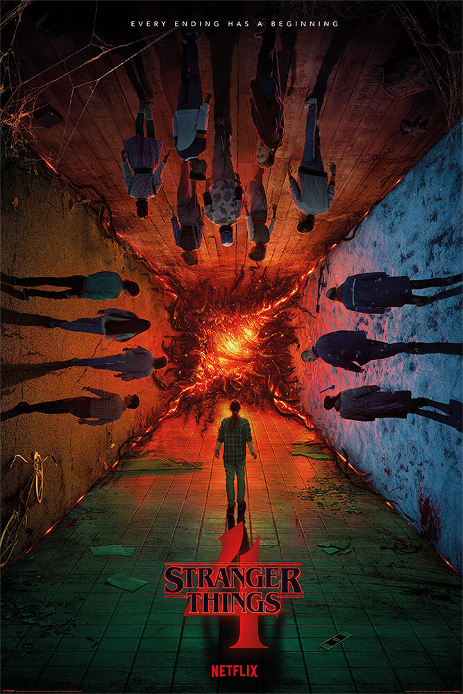

Stranger things
- Season 1
- Season 2
- Season 3
- Season 4
The first season begins on November 6, 1983, when researchers at Hawkins National Laboratory open a rift to the "Upside Down", an alternate dimension that reflects onto the real world. A monstrous humanoid creature escapes and abducts a boy named Will Byers and a teenage girl named Barbara Holland. Will's mother, Joyce, and the town's police chief, Jim Hopper, search for Will. At the same time, a young psychokinetic girl who goes by the name "Eleven" escapes from the laboratory and assists Will's friends, Mike Wheeler, Dustin Henderson, and Lucas Sinclair, in their own efforts to find Will.
In fall 1984, Will Byers finds himself the target of the Upside Down as a large tentacled entity called the Mind Flayer soon terrorizes the citizens of Hawkins, drawing back Joyce and Hopper along with Mike's sister Nancy, Will's brother Jonathan, Nancy's boyfriend Steve, as well as Will's close friends Mike, Dustin and Lucas. The whole group along with Californian newcomer Max Mayfield as well as a missing Eleven must join forces once again to prevent the threat from increasing.
In the summer of 1985 in Hawkins, the newly opened Starcourt Mall has become the center of attention in the town, causing other stores to close their business due to its popularity. Hopper disapproves of Eleven and Mike's relationship. Joyce considers moving out of Hawkins with her children. Joyce enlists the help of Hopper to investigate the reason behind her magnet losing its magnetism. Will begins having premonitions regarding the Upside Down, despite Eleven having closed the portal. The Mind Flayer takes control of Billy's mind, leaving Eleven and her friends no choice but to battle him.
Set in March 1986, eight months after the events of the third season, the fourth season is split between different plotlines. The first plotline takes place in Hawkins, where several teenagers are killed in mysterious ways. It features Dustin Henderson, Max Mayfield, Lucas and Erica Sinclair, Steve Harrington, Nancy Wheeler, Robin Buckley, and Eddie Munson, the leader of the Hellfire Club; a Dungeons & Dragons group that includes Dustin and his friends. Eddie becomes the prime murder suspect and is hunted down by Jason Carver and members of the basketball team, who believe that Eddie killed Jason's girlfriend, Chrissy Cunningham, using satanic powers. Dustin and friends investigate and discover that the murders were carried out by a powerful being that lives in the Upside Down, whom they later dub "Vecna". The second plotline involves Mike Wheeler visiting Eleven, Will and Jonathan Byers at their new home in California. Due to the events in Hawkins and the imminent danger to her friends, Eleven goes with Dr. Martin Brenner and Sam Owens to a secret facility to help her regain her powers. Mike, Will, Jonathan and Jonathan's friend Argyle try to track Eleven down. The third plotline follows Joyce Byers and Murray Bauman when they learn that Jim Hopper may still be alive. They are told to bring money to arrange for his transfer. Meanwhile, in a Soviet prison camp in Kamchatka, Hopper is held prisoner and is forced, alongside other inmates, to battle a Demogorgon that the Russians have captured.